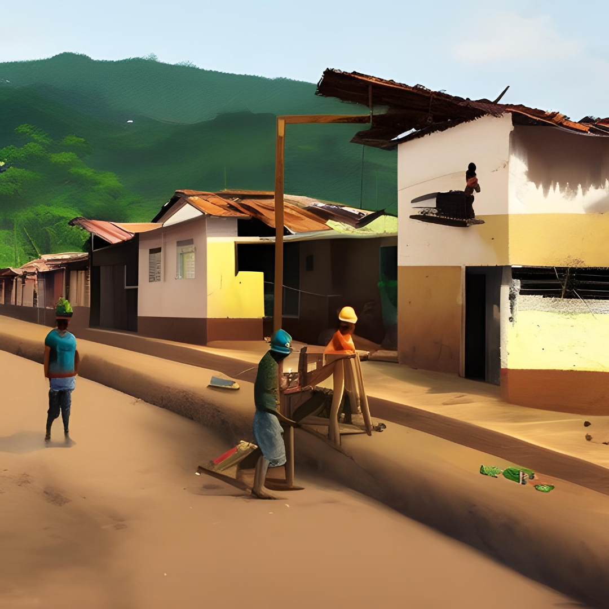

Hey, ¿Hablamos sobre los hábitos? Mi nombre es Harby Trujillo y te dejo un tutoríal para construir un hábito como latinoamericano. ¡Aprendamos juntxs!
Los hábitos son comportamientos que realizamos de manera automática y repetitiva. Estos juegan un papel crucial en nuestras vidas, ya que nos permiten llevar a cabo tareas diarias sin pensar demasiado en ellas. Sin embargo, no todos los hábitos son buenos. Por eso es importante aprender cómo construir buenos hábitos y deshacerse de los malos.
Construir un hábito puede llevar tiempo y esfuerzo, pero siguiendo estos pasos puedes facilitar el proceso:
En Latinoamérica, la perseverancia, la disciplina, la valentía y el estoicismo se manifiestan en diversas formas y hábitos. Desde la dedicación diaria de los agricultores en los campos de maíz de México, la valentía de los pescadores en las costas de Chile, hasta la disciplina de los bailarines de tango en Argentina. Cada uno de estos ejemplos nos enseña que a pesar de los desafíos y dificultades, la construcción de buenos hábitos y la perseverancia conducen a resultados positivos.
En el corazón de los Andes, Colombia se extiende como un tapiz de diversos paisajes y culturas. Dentro de este mosaico, los colombianos han cultivado una profunda resistencia y una capacidad para adaptarse y persistir frente a la adversidad. Estas cualidades se arraigan en sus hábitos diarios, desde la forma en que se levantan antes del amanecer para trabajar la tierra, hasta la devoción con la que preparan su café cada mañana.
En las ciudades, los colombianos enfrentan retos diferentes pero igualmente desafiantes. Los habitantes de Bogotá, por ejemplo, se levantan cada día para enfrentarse a un tráfico intenso y a un clima impredecible. Sin embargo, mantienen una actitud positiva y se esfuerzan por mejorar su situación a través de la educación y el trabajo duro.
Por tanto, la construcción de hábitos en Colombia es un acto de resistencia y determinación. Es un compromiso constante con la superación personal y con la mejora de la comunidad. Los colombianos comprenden que los cambios significativos y duraderos no ocurren de la noche a la mañana, sino que son el resultado de pequeñas acciones repetidas día tras día.
Para desarrollar esta capacidad de formar hábitos, uno puede comenzar con pequeños pasos. Por ejemplo, establecer una rutina matutina que incluya una actividad física, como correr o meditar, puede proporcionar un fuerte comienzo para el día. Este hábito no solo mejora la salud física, sino que también fortalece la disciplina y la capacidad de concentración.
Otro hábito poderoso es la gratitud. Tomarse un momento cada día para reflexionar sobre las cosas por las que uno está agradecido puede tener un impacto significativo en la actitud y la perspectiva de la vida. En Colombia, este sentido de gratitud se manifiesta en la calidez y generosidad de su gente.
En conclusión, la construcción de hábitos es un viaje de autodescubrimiento y crecimiento. Al observar y aprender de las actitudes de los colombianos, podemos adquirir valiosas lecciones sobre la perseverancia, la gratitud y la resistencia. Estos hábitos, cultivados y practicados con regularidad, pueden convertirse en poderosas herramientas para la transformación personal y comunitaria.
Soy un antropólogo y programador con base en Colombia, apasionado por mejorar la calidad de vida de las personas a través de la comprensión y la aplicación de sus saberes culturales. Creo que el camino para combatir la pobreza y aumentar la equidad está en aprovechar la diversidad cultural como una fuerza impulsora para el cambio...
Si deseas ponerse en contacto conmigo, puedes enviarme un email a: harby.trujillo@gmail.com